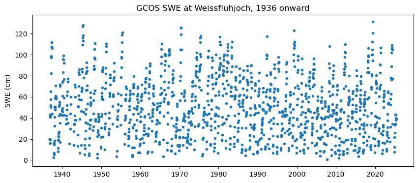
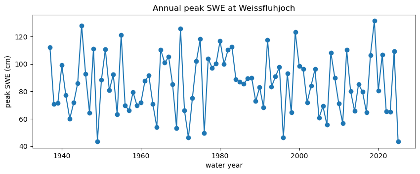
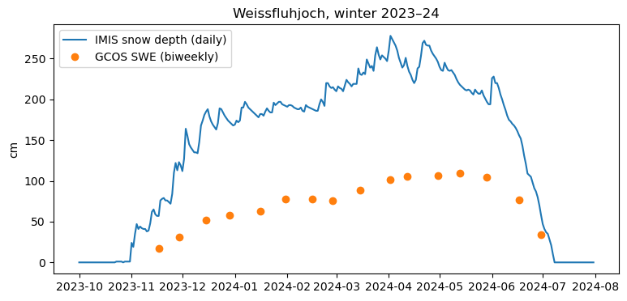

Note
Go to the end to download the full example code.
Swiss long-term SWE (SLF)#
The WSL Institute for Snow and Avalanche Research SLF has measured SWE by hand every two weeks at 11 sites between 1,200 and 2,540 m, some since 1936 (the GCOS SWE series). It also publishes daily snow depth from its manual study plots and its automated IMIS stations. Switzerland has no open daily SWE.
SLFClient(dataset=...) reads one dataset at a time: "gcos" (default,
SWE every ~15 days), "new_snow" (2016–2022 new-snow SWE study),
"study_plot" and "imis" (daily snow depth). Each uses its own station
ids. Data are free with attribution to SLF (CC BY 4.0; GCOS: ODbL). It is not
part of esd.stations.inventory() or load().
The figures show the GCOS SWE series at Weissfluhjoch since 1936, and one winter of IMIS daily snow depth next to the biweekly SWE.
import matplotlib.pyplot as plt
import pandas as pd
from easysnowdata.stations.clients import SLFClient
gcos = SLFClient(dataset="gcos")
The eleven GCOS sites.
sites_df = pd.DataFrame(gcos.get_all_stations()).set_index("station_id")
print(sites_df[["name", "elevation_m", "period_of_record"]].to_string())
name elevation_m period_of_record
station_id
1MR Mürren 1650.0 1949-02-01/2025-03-31
2AN Andermatt 1440.0 1947-01-15/2025-03-31
2TR Trübsee 1780.0 1949-02-15/2025-04-15
4UL Ulrichen 1350.0 1950-12-15/2025-03-15
4ZE Zermatt 1600.0 1947-02-01/2025-02-15
5DF Davos Flüelastr. 1560.0 1947-12-01/2025-03-20
5KK Klosters KW 1200.0 1947-12-01/2025-03-03
5WJ Weissfluhjoch 2540.0 1936-11-01/2025-05-31
6SB San Bernardino 1640.0 1973-01-16/2025-04-11
7ST Sta.Maria 1415.0 1968-02-08/2025-03-20
7ZU Zuoz 1710.0 1950-12-17/2025-03-14
Weissfluhjoch above Davos (2,540 m): every manual SWE measurement since
1936. Records are "periodic".
records = gcos.get_data("5WJ", variables="swe")
wfj_df = pd.DataFrame(records).assign(date=lambda df: pd.to_datetime(df["date"]))
print(wfj_df["interval"].unique(), len(wfj_df), "measurements")
fig, ax = plt.subplots(figsize=(10, 4))
ax.plot(wfj_df["date"], wfj_df["value"], ".")
ax.set(ylabel="SWE (cm)", title="GCOS SWE at Weissfluhjoch, 1936 onward")

<ArrowStringArray>
['periodic']
Length: 1, dtype: str 1384 measurements
[Text(23.999999999999993, 0.5, 'SWE (cm)'), Text(0.5, 1.0, 'GCOS SWE at Weissfluhjoch, 1936 onward')]
Peak SWE by water year shows the long-term record that only the manual series can give.
wfj_df["water_year"] = wfj_df["date"].dt.year + (wfj_df["date"].dt.month >= 10)
peak = wfj_df.groupby("water_year")["value"].max()
fig, ax = plt.subplots(figsize=(10, 3.5))
ax.plot(peak.index, peak.values, marker="o")
ax.set(
xlabel="water year",
ylabel="peak SWE (cm)",
title="Annual peak SWE at Weissfluhjoch",
)

[Text(0.5, 24.0, 'water year'), Text(23.999999999999993, 0.5, 'peak SWE (cm)'), Text(0.5, 1.0, 'Annual peak SWE at Weissfluhjoch')]
The automated IMIS station at the same site (WFJ2) gives daily snow
depth for the same winter as the biweekly SWE.
imis = SLFClient(dataset="imis")
depth_df = pd.DataFrame(
imis.get_data(
"WFJ2",
variables="snwd",
interval="daily",
begin_date="2023-10-01",
end_date="2024-07-31",
)
).assign(date=lambda df: pd.to_datetime(df["date"]))
winter_df = wfj_df[(wfj_df["date"] >= "2023-10-01") & (wfj_df["date"] <= "2024-07-31")]
fig, ax = plt.subplots(figsize=(9, 4))
ax.plot(depth_df["date"], depth_df["value"], label="IMIS snow depth (daily)")
ax.plot(winter_df["date"], winter_df["value"], "o", label="GCOS SWE (biweekly)")
ax.set(ylabel="cm", title="Weissfluhjoch, winter 2023–24")
ax.legend()

<matplotlib.legend.Legend object at 0x7f2f0d5cc410>